Este relatório apresenta uma análise descritiva do ranking temático Direitos da Infância e Adolescência, incorporando também variáveis biográficas e eleitorais dos deputados da legislatura passada. O documento está organizado da seguinte forma: cada subseção apresenta um cruzamento ou visualização específica, descrevendo resumidamente o que se pode extrair dali.
O gráfico abaixo mostra a distribuição das notas no ranking. Como é possível ver, a maioria dos deputados têm nota negativa. A nota média é de -0.58 e, a mediana da Câmara, de -1.66 (indicada pela linha vertical tracejada no gráfico). Vale ressaltar, no entanto, que a distribuição dessas notas é claramente bimodal: há um grupo com atuação mais positiva e, outro, mais numeroso, com atuação negativa.
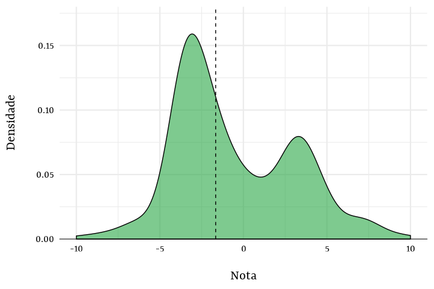
O gráfico a seguir reporta a distribuição das notas dos deputados agrupadas e ordenadas por partido. Como resultado, é possível ver alguns partidos com atuação mais favorável ao tema, como PSOL, PC do B e PT; para a grande maioria, entrentao, não há um padrão claro. De forma geral, a divisão entre partidos não parece ter relação estreita com a defesa de direitos da infância.
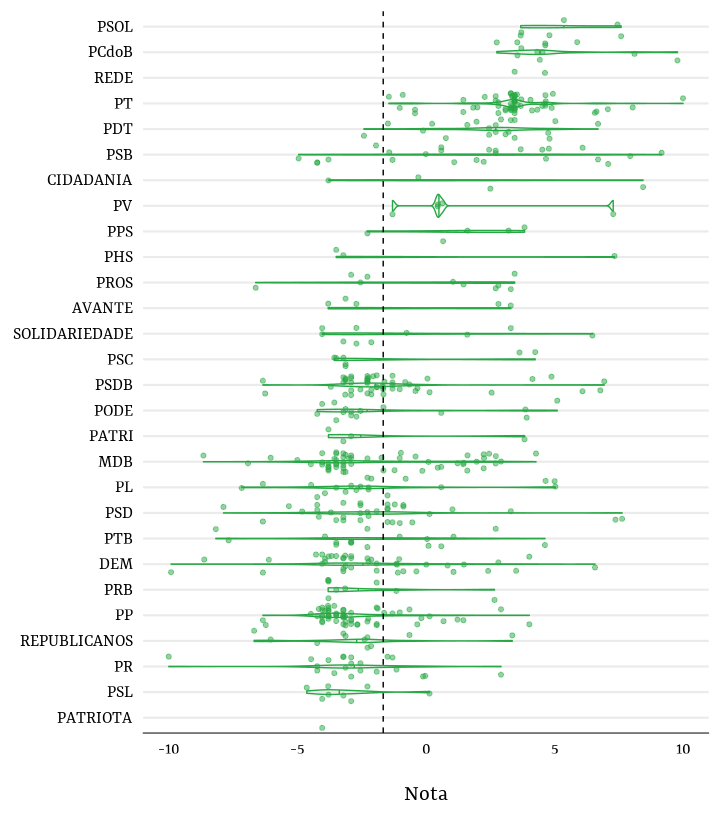
Na tabela abaixo seguem algumas estatísticas descritivas sobre a distribuição das notas por partido (média, mediana e N de parlamentares).
| Partido | Parlamentares (N) | Média | Mediana |
|---|---|---|---|
| PP | 59 | -2.6613794 | -3.2103733 |
| PT | 59 | 3.4124898 | 3.4522372 |
| MDB | 57 | -1.7698179 | -2.9906352 |
| PSDB | 51 | -1.3252297 | -2.0479205 |
| DEM | 41 | -2.0317007 | -2.9084377 |
| PSD | 34 | -1.8434301 | -2.2525797 |
| PSB | 25 | 1.8883192 | 2.2486788 |
| PDT | 21 | 2.4613599 | 2.7158309 |
| PR | 21 | -2.6997469 | -2.9084377 |
| PL | 20 | -1.8367225 | -2.4103819 |
| PTB | 17 | -1.8746098 | -2.2749202 |
| PODE | 15 | -1.3912822 | -2.9084377 |
| PCdoB | 12 | 4.9953833 | 4.4844003 |
| REPUBLICANOS | 11 | -2.6933216 | -2.3848077 |
| PROS | 10 | 0.0462167 | 1.2593918 |
| SOLIDARIEDADE | 10 | -0.8172363 | -2.4134306 |
| PRB | 9 | -2.4654692 | -3.4877339 |
| PSL | 8 | -3.0642472 | -3.5000214 |
| PSC | 7 | -1.2314753 | -3.1251397 |
| PSOL | 6 | 5.4369293 | 5.0878723 |
| AVANTE | 5 | -0.7011423 | -2.7030787 |
| PPS | 5 | 1.4135209 | 1.6201611 |
| PV | 5 | 1.5120865 | 0.4681876 |
| CIDADANIA | 4 | 1.7173288 | 1.1068023 |
| PATRI | 4 | -1.5178325 | -3.0594055 |
| PHS | 3 | 0.2127327 | -3.2103733 |
| REDE | 2 | 4.0418437 | 4.0418437 |
| PATRIOTA | 1 | -4.0346546 | -4.0346546 |
Por UF, a distribuição das notas tem padrão ainda menos aparente. Como depreende-se do gráfico abaixo, há enorme dispersão dentro de cada unidade da federação.
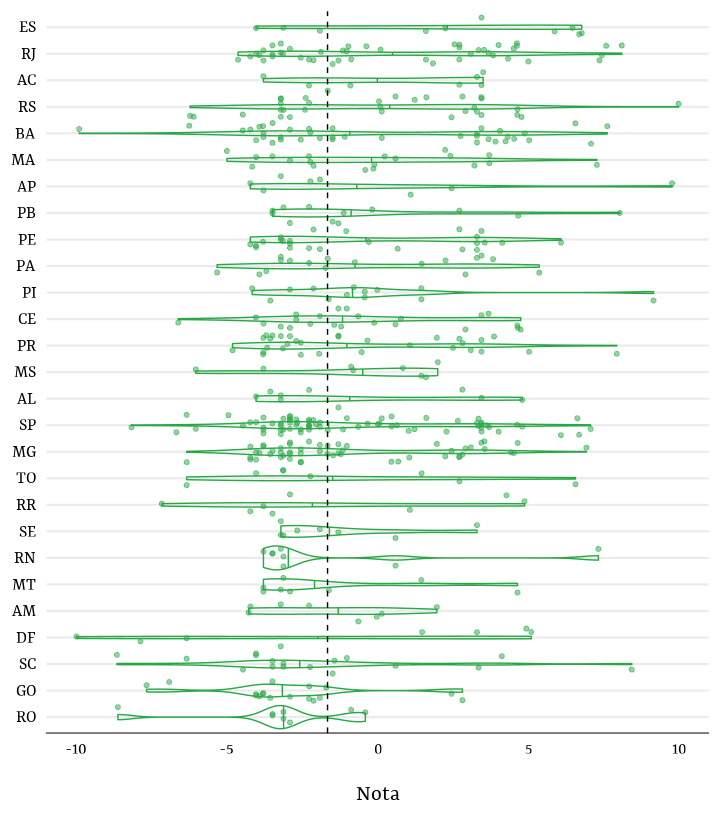
O sexo dos(as) deputados(as) distingue bem suas notas no ranking. No grupo de atuação mais desfavorável, homens estão sobrerrepresentados; já no de atuação mais favorável, mulheres se sobressaem.
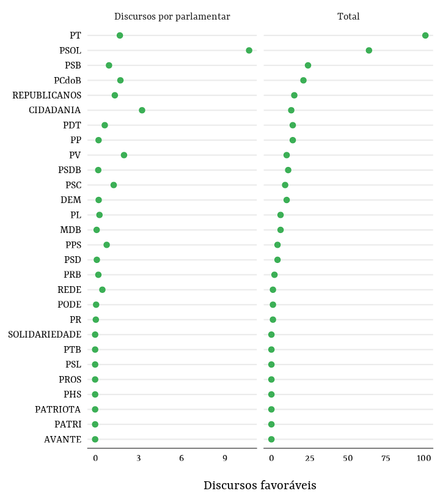
O grau de instrução reportado pelos(as) deputados(as) não têm relação aparente com a distribuição de suas notas no ranking.
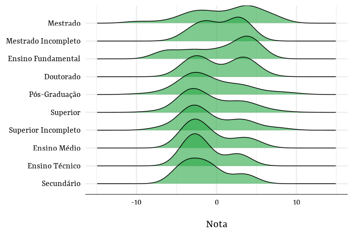
Os painéis abaixo exibem a distribuição dos scores – as métricas utilizadas para gerar as notas do ranking. De todos os tipos deles, os de votações nominais são quase uniformemente distribuídos entre os deputados.
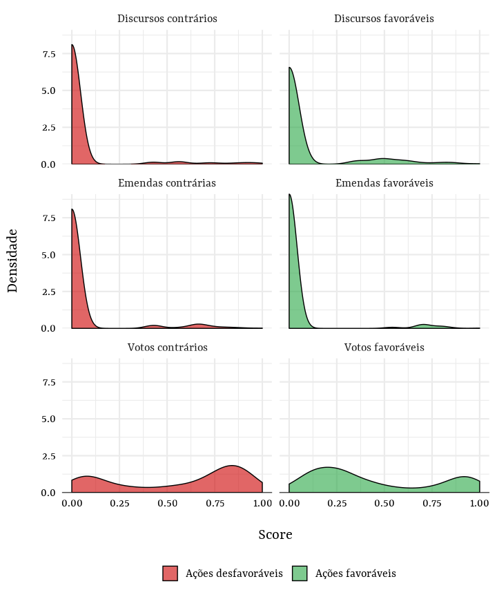
Ainda com foco nos partidos, o gráfico abaixo analisa a distribuição dos votos favoráveis ao tema por partido. Novamente, alguns partidos se destacam no lado favorável ao terem entregado, em média, cerca de 10 votos favoráveis (de 13 possíveis). No geral, assim como no gráfico anterior, a maioria dos partidos entregou poucos votos favoráveis ao tema (a mediana é de 3).
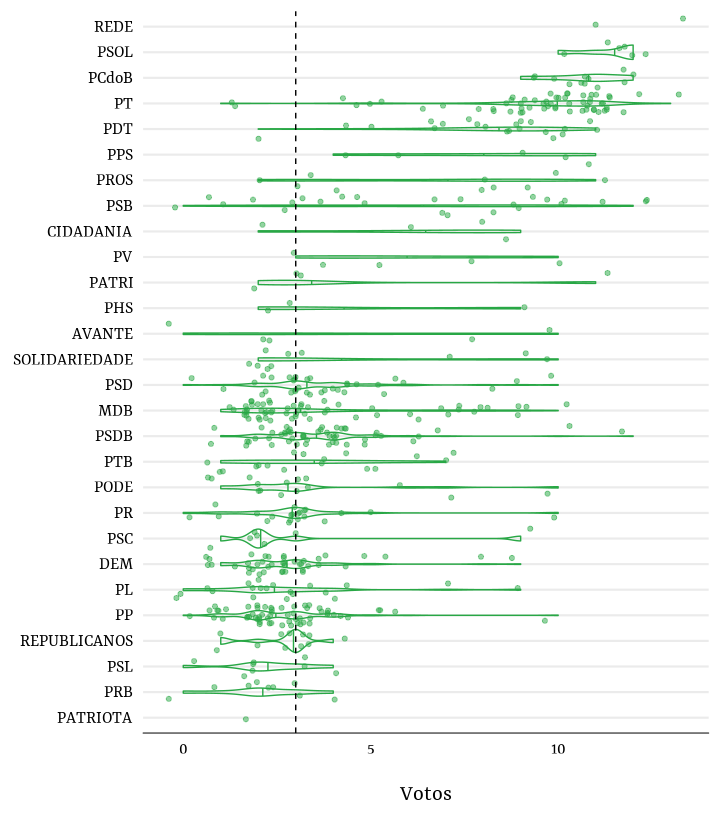
Quando os discursos favoráveis ao tema são analisados por partido (como o N de discursos é pequeno, agregá-los por partido faz mais sentido), dá para notar que apenas alguns partidos se destacam na defesa do tema: particularmente, PT e PSOL. Os gráficos abaixo mostram isso, reportando o número total de discursos favoráveis por partido e, também, o número de discursos favoráveis per capita (i.e., por parlamentar). Nesse último caso, o PSOL se destaca pela ênfase temática e, além disso, o CIDADANIA também ganha em importância. Para a esmagadora maioria dos partidos, entretanto, qualquer apoio ao tema fica restrito aos votos em plenário.
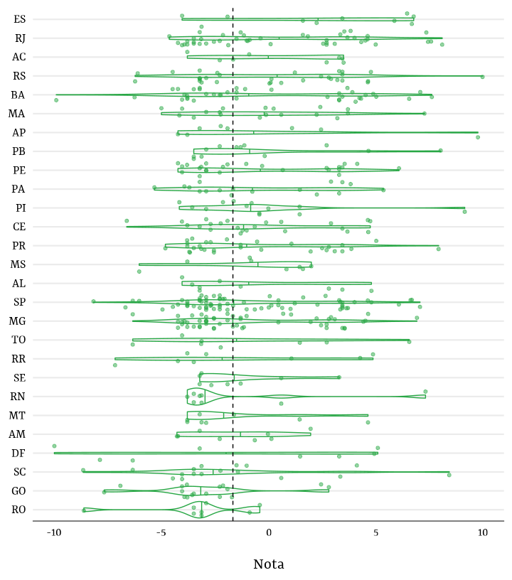
Abaixo, o número de discursos contrários é reportado por partido. Aqui já é possível observar maior variação entre partidos, com destaque para o DEM, PSDB, MDB, PSDB e PP no número total de discursos. Relativamente, PPS e REPUBLICANOS (antigo PRB) são os partidos que mais tiveram discursos contrários.
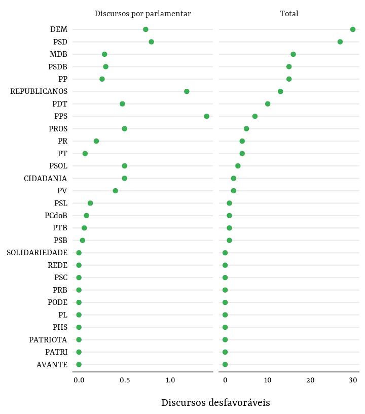
Quando às emendas favoráveis, o padrão é menos nítido: destacam-se DEM e PT, por exemplo, ambos em lados opostos quando são analisados votos e discursos. Proporcionalmente, PC do B, CIDADANIA e PV também aparecem com atuação favorável nesse item.
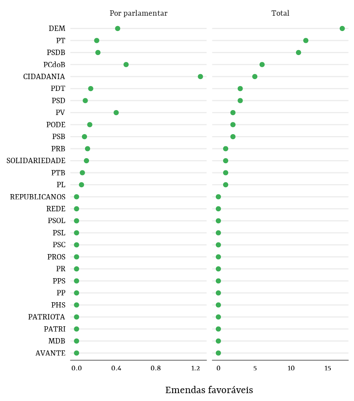
Emendas desfavoráveis são encontradas em vários partidos, com destaque para PSD, DEM, PT e CIDADANIA. Como fica visível, o volume de emendas favoráveis e desfavoráveis tende a ser similar entre os partidos.
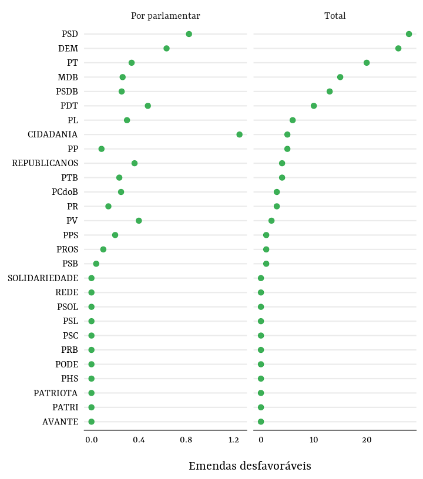
Parte da atuação parlamentar é mediada pelos partidos, algo que é especialmente saliente em votações nominais. Para remover o que é efeito dos partidos nas notas do ranking, abaixo examinei os resíduos das notas regredidas na variável partidária. Com isso, é possível saber quais deputados(as) têm notas maiores ou menores do que é possível predizer com base em suas filiações – a comparação, em outras palavras, é feita sem levar controlando tudo aquilo determinado pelos partidos na variação do ranking.
Formalmente, seja \(i\) o indexador dos(as) deputados(as) e \(j\) o dos partidos, o modelo estimado por OLS estima o efeito predito do \(Partido_{j}\) sobre a \(Nota_{ij}\):
\[ Nota_{ij} = \beta Partido_{j} + \epsilon_{ij} \]
Cerca de 40.1% da variação na nota é predita pela filiação partidária e, mais importante, é possível inferir diferenças entre esses efeitos preditos, como mostra o gráfico abaixo (as linhas horizontais indicam os intervalos de confiança de 90% das estimativas).
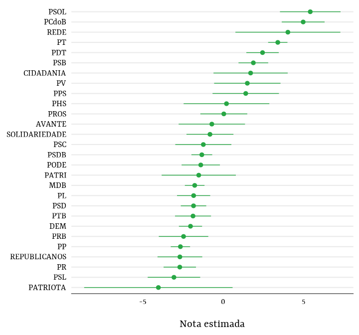
Tendo os valores preditos de \(\hat{Nota_{ij}}\), os resíduos partidários, \(\hat{Nota_{ij}} - Nota_{ij}\), podem ser usados para detectar quais parlamentares tiveram atuação mais positiva ou negativa do que seria de esperar dado a atuação de seus partidos. Uma lista com os 20 melhores segue abaixo:
| Rank* | Nota | Nome | Partido | UF |
|---|---|---|---|---|
| 1 | 7.6 | PAULO MAGALHÃES | PSD | BA |
| 2 | 7.4 | HUGO LEAL | PSD | RJ |
| 3 | 6.6 | PROFESSORA DORINHA SEABRA REZENDE | DEM | TO |
| 4 | 6.9 | EDUARDO BARBOSA | PSDB | MG |
| 5 | 6.8 | MAX FILHO | PSDB | ES |
| 6 | 6.1 | MARA GABRILLI | PSDB | SP |
| 7 | 6.5 | DR. JORGE SILVA | SOLIDARIEDADE | ES |
| 8 | 9.2 | ÁTILA LIRA | PSB | PI |
| 9 | 7.3 | ZENAIDE MAIA | PHS | RN |
| 10 | 5.0 | CHRISTIANE DE SOUZA YARED | PL | PR |
| 11 | 5.0 | SORAYA SANTOS | PL | RJ |
| 12 | 8.4 | CARMEN ZANOTTO | CIDADANIA | SC |
| 13 | 4.0 | ARNALDO FARIA DE SÁ | PP | SP |
| 14 | 10.0 | MARIA DO ROSÁRIO | PT | RS |
| 15 | 4.6 | CRISTIANE BRASIL | PTB | RJ |
| 16 | 5.1 | RONALDO FONSECA | PODE | DF |
| 17 | 4.7 | LINCOLN PORTELA | PL | MG |
| 18 | 4.9 | SHÉRIDAN | PSDB | RR |
| 19 | 7.9 | ALIEL MACHADO | PSB | PR |
| 20 | 4.0 | SÓSTENES CAVALCANTE | DEM | RJ |
Os 20 piores:
| Rank* | Nota | Nome | Partido | UF |
|---|---|---|---|---|
| 1 | -9.9 | ARTHUR OLIVEIRA MAIA | DEM | BA |
| 2 | -10.0 | LAERTE BESSA | PR | DF |
| 3 | -8.7 | VALDIR COLATTO | MDB | SC |
| 4 | -5.0 | LUIZ LAURO FILHO | PSB | SP |
| 5 | -6.6 | VITOR VALIM | PROS | CE |
| 6 | -8.6 | MARCOS ROGÉRIO | DEM | RO |
| 7 | -8.2 | NELSON MARQUEZELLI | PTB | SP |
| 8 | -4.2 | JEFFERSON CAMPOS | PSB | SP |
| 9 | -4.2 | GONZAGA PATRIOTA | PSB | PE |
| 10 | -7.9 | ROGÉRIO ROSSO | PSD | DF |
| 11 | -7.7 | JOVAIR ARANTES | PTB | GO |
| 12 | -3.8 | ELIZEU DIONIZIO | PSB | MS |
| 13 | -3.8 | ALEX MANENTE | CIDADANIA | SP |
| 14 | -7.2 | EDIO LOPES | PL | RR |
| 15 | -6.9 | DANIEL VILELA | MDB | GO |
| 16 | -6.3 | IZALCI LUCAS | PSDB | DF |
| 17 | -6.3 | JUTAHY JUNIOR | PSDB | BA |
| 18 | -2.4 | POMPEO DE MATTOS | PDT | RS |
| 19 | -1.4 | JOSÉ GUIMARÃES | PT | CE |
| 20 | -6.3 | CAPITÃO AUGUSTO | PL | SP |
Abaixo, segue a distribuição espacial da soma dos votos percentuais dos(as) 100 deputados(as) com maior nota no ranking.
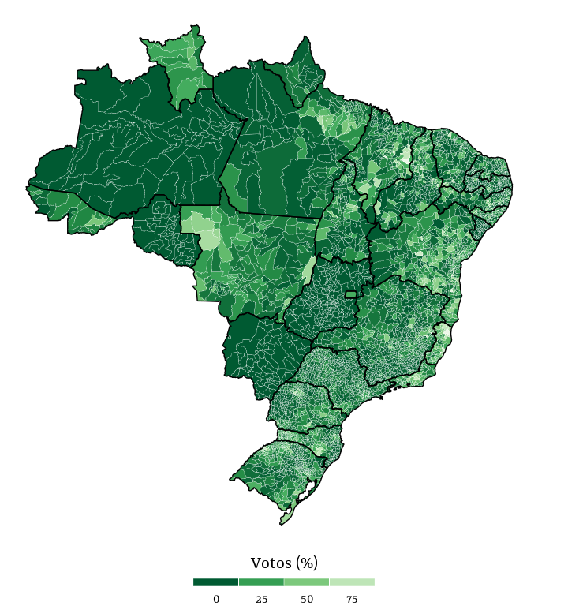
A seguir, o mapa da votação conjunta dos(as) 100 deputados(as) com pior nota no ranking.
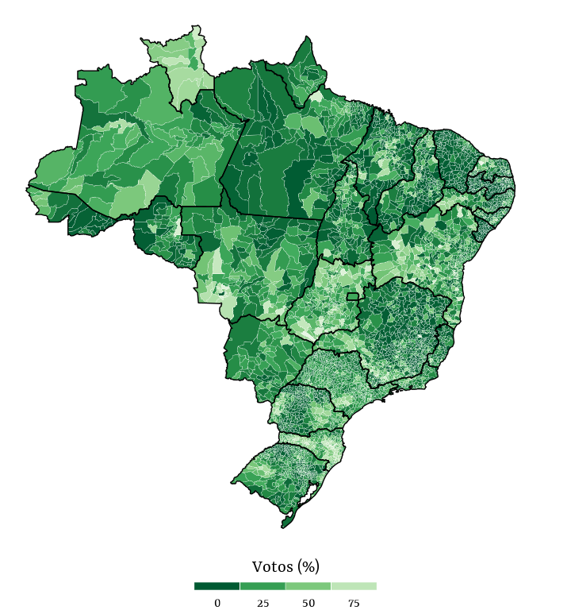
O gráfico abaixo reporta as notas médias no ranking de parlamentares homens e mulheres por partido (para as seis legendas com mais mulheres; o PL é o último da lista, com três eleitas). Exceto pelo PODEMOS, é possível ver que em todos os partidos mulheres têm notas maiores do que os homens, com destaque para a diferença no caso do PMDB e do PL.
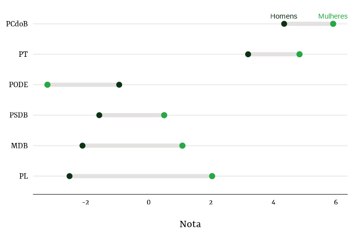
A tabela abaixo reporta o número de parlamentares por sexo em cada um dos partidos analisados acima, além de reportar a média e mediana de suas notas.
| Partido | sexo | Parlamentares (N) | Média | Mediana |
|---|---|---|---|---|
| MDB | Feminino | 6 | 1.1 | 1.9 |
| MDB | Masculino | 51 | -2.1 | -3.1 |
| PCdoB | Feminino | 5 | 5.9 | 4.5 |
| PCdoB | Masculino | 7 | 4.3 | 4.4 |
| PL | Feminino | 3 | 2.0 | 5.0 |
| PL | Masculino | 17 | -2.5 | -2.5 |
| PODE | Feminino | 3 | -3.2 | -2.9 |
| PODE | Masculino | 12 | -0.9 | -2.8 |
| PSDB | Feminino | 6 | 0.5 | -1.0 |
| PSDB | Masculino | 45 | -1.6 | -2.1 |
| PT | Feminino | 8 | 4.8 | 4.6 |
| PT | Masculino | 51 | 3.2 | 3.5 |
Abaixo, o exercício anterior é repetido com os estados. Uma vez mais, o padrão que emerge é similar: mulheres tendem a ter notas maiores em quase todas as UF.
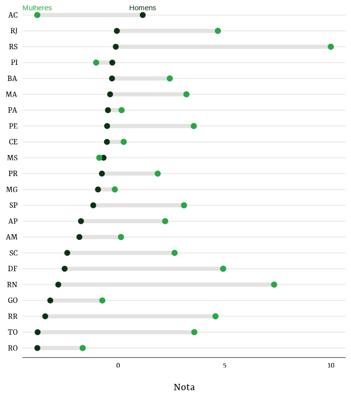
Abaixo, a tabela correspondente.
| UF | Sexo | Parlamentares (N) | Média | Mediana |
|---|---|---|---|---|
| AC | Feminino | 1 | -3.8 | -3.8 |
| AC | Masculino | 7 | 1.2 | 2.7 |
| AL | Masculino | 9 | -0.7 | -2.3 |
| AM | Feminino | 1 | 0.1 | 0.1 |
| AM | Masculino | 7 | -1.8 | -2.3 |
| AP | Feminino | 3 | 2.2 | 1.1 |
| AP | Masculino | 5 | -1.7 | -2.2 |
| BA | Feminino | 3 | 2.4 | 4.5 |
| BA | Masculino | 36 | -0.3 | -1.5 |
| CE | Feminino | 2 | 0.3 | 0.3 |
| CE | Masculino | 21 | -0.5 | -1.2 |
| DF | Feminino | 1 | 4.9 | 4.9 |
| DF | Masculino | 7 | -2.5 | -3.2 |
| ES | Masculino | 10 | 2.4 | 2.9 |
| GO | Feminino | 2 | -0.7 | -0.7 |
| GO | Masculino | 15 | -3.2 | -3.5 |
| MA | Feminino | 1 | 3.2 | 3.2 |
| MA | Masculino | 18 | -0.4 | -0.3 |
| MG | Feminino | 5 | -0.1 | -1.9 |
| MG | Masculino | 48 | -0.9 | -1.8 |
| MS | Feminino | 1 | -0.9 | -0.9 |
| MS | Masculino | 7 | -0.7 | 0.8 |
| MT | Masculino | 8 | -1.5 | -3.0 |
| PA | Feminino | 3 | 0.2 | 1.5 |
| PA | Masculino | 14 | -0.5 | -1.7 |
| PB | Masculino | 12 | -0.3 | -1.4 |
| PE | Feminino | 1 | 3.6 | 3.6 |
| PE | Masculino | 24 | -0.5 | -2.0 |
| PI | Feminino | 2 | -1.0 | -1.0 |
| PI | Masculino | 11 | -0.3 | -0.8 |
| PR | Feminino | 2 | 1.9 | 1.9 |
| PR | Masculino | 29 | -0.8 | -2.5 |
| RJ | Feminino | 6 | 4.7 | 4.5 |
| RJ | Masculino | 40 | -0.1 | -1.1 |
| RN | Feminino | 1 | 7.3 | 7.3 |
| RN | Masculino | 7 | -2.8 | -3.2 |
| RO | Feminino | 2 | -1.7 | -1.7 |
| RO | Masculino | 6 | -3.8 | -3.3 |
| RR | Feminino | 2 | 4.6 | 4.6 |
| RR | Masculino | 6 | -3.4 | -3.6 |
| RS | Feminino | 1 | 10.0 | 10.0 |
| RS | Masculino | 30 | -0.1 | 0.1 |
| SC | Feminino | 2 | 2.7 | 2.7 |
| SC | Masculino | 15 | -2.4 | -3.1 |
| SE | Masculino | 8 | -1.4 | -2.3 |
| SP | Feminino | 6 | 3.1 | 4.9 |
| SP | Masculino | 66 | -1.2 | -2.3 |
| TO | Feminino | 3 | 3.6 | 2.7 |
| TO | Masculino | 5 | -3.8 | -3.1 |